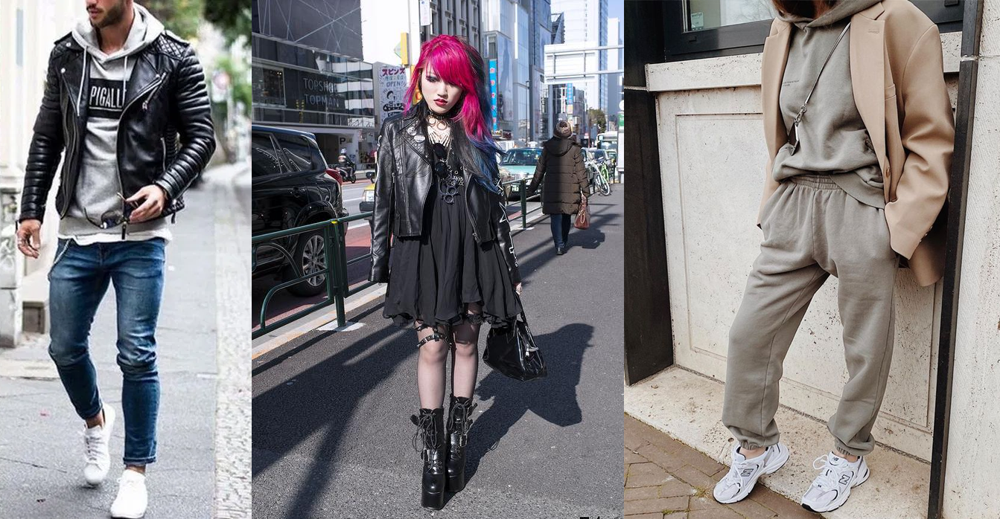

Styli ubioru jest teraz od groma, od prostych operacji z ciuchami aż po bardzo skomplikowane czy też mniej lubiane przez innych z powodu nagromadzenia się wszystkiego:
-Casualowy ubiór: Słowo ,,casual” oznacza bowiem ,,codzienny”, tak więc definicja casual style to nic innego jak po prostu styl na co dzień. W modowej hierarchii można umiejscowić go na pograniczu sportowej elegancji i nieformalnego ubioru.
-Moda uliczna ("streetwear") reetwear jest zapożyczeniem z języka angielskiego i w przełożeniu na język polski to po prostu „moda uliczna”. Jest to styl ubioru inspirowany przestrzenią publiczną. Choć poniekąd wywodzi się z mody ulicznej, to w praktyce wcale nią nie jest. Streetwear stale ewoluuje, a moda światowa nie ma na niego żadnego wpływu ceny poszczególnych rzeczy są zarówno niskie jak i osiągają niewyobrażalne kwoty.
-Styl alternatywny? ciężko to nazwać "stylem", bo gdyby istniał ustalony styl, to trudno byłoby go nazwać alternatywnym. Można wyróżnić pojedyncze znaki rozpoznawcze. Zazwyczaj to jednak kruczoczarne / kolorowe włosy i dość blada cera. Pojawiają się też kolczyki w różnych miejscach na uchu i twarzy. Makijaż to głównie czarny eyeliner, a nie kolorowe cienie a ubiór najczęściej w barwach czarnych mrocznych, taki wyróżniający się.